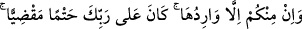
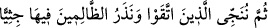
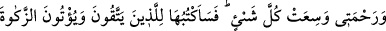
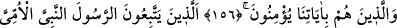

Bir gün yahudinin biri onun meclisine uğradı. O sırada o zat insanları Allah’ın
azabından korkutuyor ve şu ayeti okuyordu:
“İçinizden oraya uğramayacak hiçbir kimse yoktur. Bu, Rabb’inin üzerine aldığı
kesinleşmiş bir hükümdür.” (Meryem, 19/71)
Yahudi:
“Eğer bu söz doğruysa, o zaman biz ve siz eşitiz.” dedi.
Şeyh, ona şu karşılığı verdi:
“Hayır, eşit değiliz. Biz uğrayıp geçeriz, siz uğrarsınız geçemezsiniz. Biz oradan
takvâmız sâyesinde kurtuluruz. Siz ise zulmünüz sebebiyle diz üstü çöker kalırsınız.”
Sonra peşindeki ayeti okudu:
“Sonra takvâ sahiplerini kurtarırız ve zalimleri orada diz üstü çökmüş halde
bırakırız.” (Meryem, 19/72)
Bunun üzerine yahudi “Biz de Allah’dan korkuyoruz (takvâ sâhibiyiz).” dedi. Şeyh:
“Hayır, Allah’dan korkan sadece biziz.” dedi ve şu ayeti okudu:
“Rahmetim ise her şeyi kaplamıştır. Onu korunanlara (takvâ sahiplerine), zekatı
verenlere ve ayetlerimize inananlara yazacağım. Onlar, o Rasûl’e, ümmî
Peygamber’e uyarlar” (el-A‘raf, 7/156-157)
Bunun üzerine yahudi: “Bu sözünü doğrulayan bir delil getir” dedi. Şeyh şöyle cevap
verdi:
“Delil hazır ve bakan herkes görebilir. Benim ve senin elbiseni ateşe atalım. Kiminki
yanmazsa o, cehennemden kurtulacak; kiminki yanarsa o cehennemde ebedi kalacak
demektir.”
Elbiselerini çıkardılar. Şeyh, yahudinin elbisesini aldı, dürdü ve üzerine de kendi
elbisesini dürerek ateşe attı. Sonra ateşin içine girdi. Elbiseleri alarak ateşin öbür
tarafından çıktı. Elbiseler açıldığında müslüman şeyhin elbiseleri, bembeyaz ve
sağlamdı. Hatta ateş onu temizlemiş ve kirini de gidermişti. Yahudininki ise yanmıştı.
Halbuki onun elbisesi sarılı idi. Müslüman şeyhin elbisesi ise ateşe maruz kalmıştı.
Yahudi, bunu görünce müslüman oldu. Allah’a hamd olsun dedi.
Bu hikâye, zikredilen ayetlere uygun düşmektedir. Çünkü Kureyş kafirleri zulüm ve